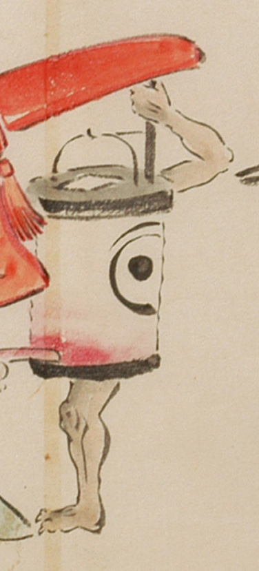

提灯の化物。一つ目で、手足が1本ずつ生えている。足は2本もしくは3本指に見え、鋭い爪が生えている。
出典：親書誌：U426_nichibunken_0053：化物婚礼絵巻；バケモノコンレイエマキ／日付：2006／資源識別子：U426_nichibunken_0053_0015_0001
Copyright (c)2010- International Research Center for Japanese Studies, Kyoto, Japan. All rights reserved.